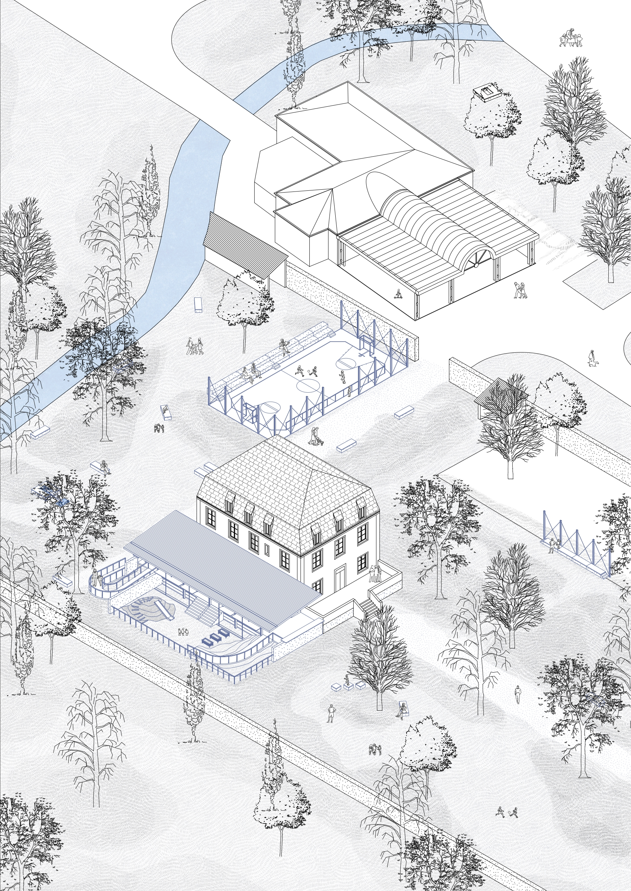
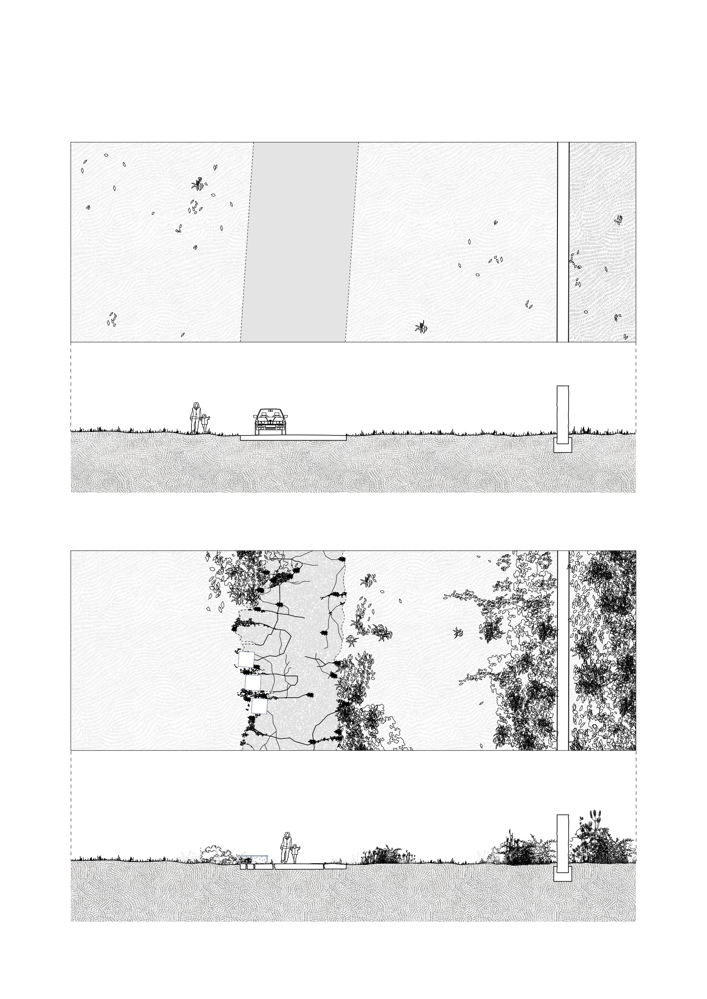

Une ville au pied des montagnes doit-elle s’endormir sous l’asphalte ? À Loures-Barousse, la réhabilitation de la Maison Cachia pose une question essentielle : et si réinventer ce territoire commençait par faire sauter le bitume pour réapprendre à habiter le sol ?
Pourquoi ne pas l’espace public à la liberté offerte à l’enfance? C’est en voyant des enfants jouer spontanément sur un muret d’autrefois qu’est née l’intervention : le dessin d’un tracé de pierre locale qui serpentent à travers le site. En métamorphosant ce campus en un jardin commun reliant la gare, les écoles et la Maison Cachia restaurée, cette ligne minérale efface les frontières pour retisser du lien. En se déployant face à la montagne, ce muret de pierre dépasse sa fonction d’obstacle pour réintégrer le paysage au cœur de l’expérience quotidienne.
← Retour !

